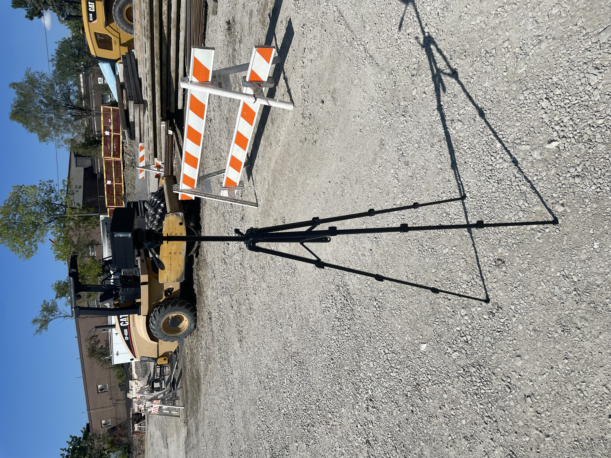
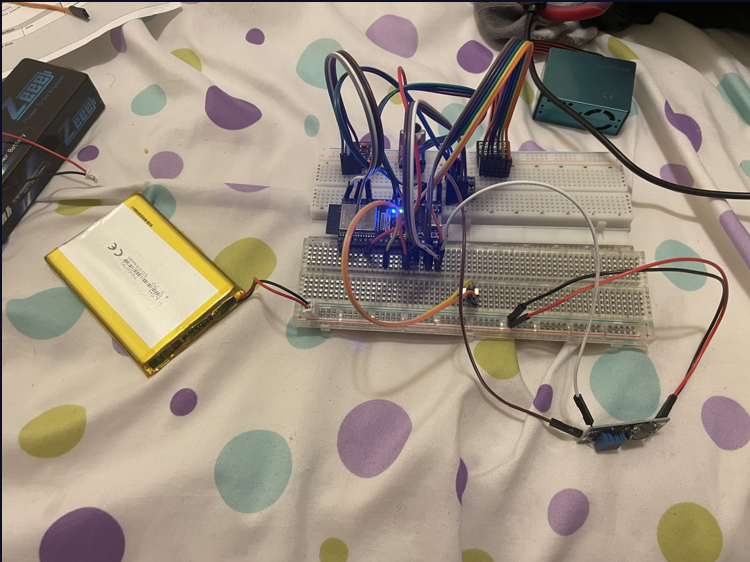
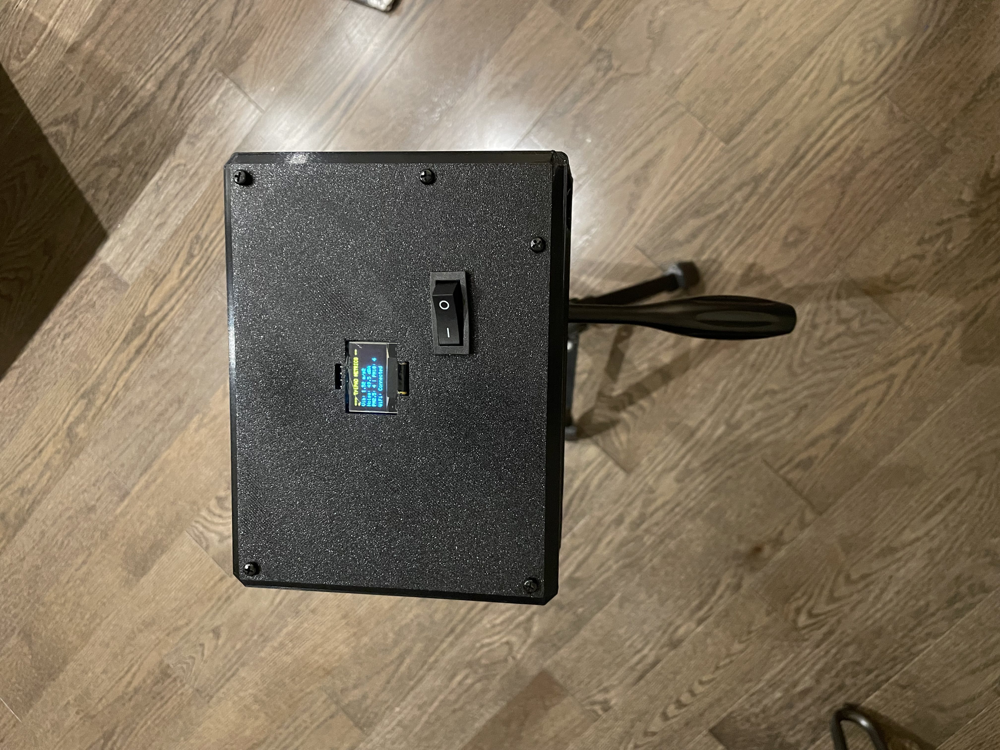
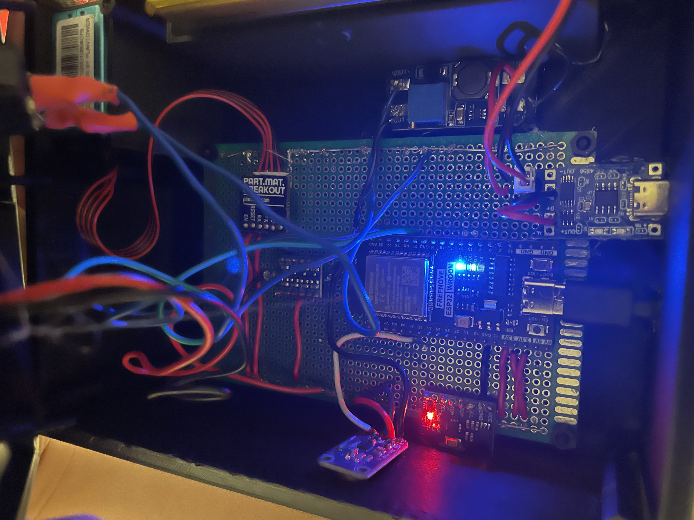

TriPAD Construction Monitor
Multi-Sensor Environmental Data Logger & Site Safety System

TriPAD deployed on an active construction site conducting real-time vibration and air quality sampling.
Project Overview
TriPAD is a custom hardware monitoring unit engineered to record critical environmental safety metrics on active construction job sites. Built around an ESP32 microcontroller, the device simultaneously samples structural vibration, ambient acoustic noise levels, and airborne particulate density in real time.
System Demonstration
Field Validation & Stakeholder Feedback

On-site evaluation with site superintendent and engineering mentor reviewing real-time sensor output (TriPAD bottom left).
To validate real-world performance, the TriPAD unit was deployed on an active construction site in collaboration with site superintendents and industry advisors.
Direct feedback from site operators led to key design iterations, including optimizing enclosure shock absorption for heavy-equipment vibration and tuning acoustic peak-detection thresholds for machinery noise.
Enclosure & Mechanical CAD
Custom 3D-printed enclosure designed in Fusion 360 to house the internal PCB stack, sensor cutouts, and OLED display, with built-in mounting features for site attachment.
Hardware & Sensor Integration
Processing
ESP32 MCU running custom firmware for concurrent asynchronous multi-sensor reads and real-time OLED screen updates.
Air Quality (UART)
Plantower PMS5003 laser particulate sensor measuring PM1.0, PM2.5, and PM10 concentrations.
Vibration & Noise
MPU6050 6-DOF IMU (I2C) for transient structural shock logging alongside MAX9814 electret microphone module for dBA noise threshold tracking.
Hardware Evolution
From proof-of-concept breadboard verification to final custom protoboard assembly and internal wire routing.

Stage 1: Breadboard Proof-of-Concept
Validating I2C/UART bus addresses and signal integrity across all three sensor modules.

Stage 2: Protoboard Integration
Soldered custom power bus distribution and compact header pins to fit the 3D-printed enclosure.
System Details

OLED Interface
Live telemetry reporting showing current PM values and peak vibration alerts.

Internal Assembly
Secure internal mounting layout designed to withstand vibration testing on site.